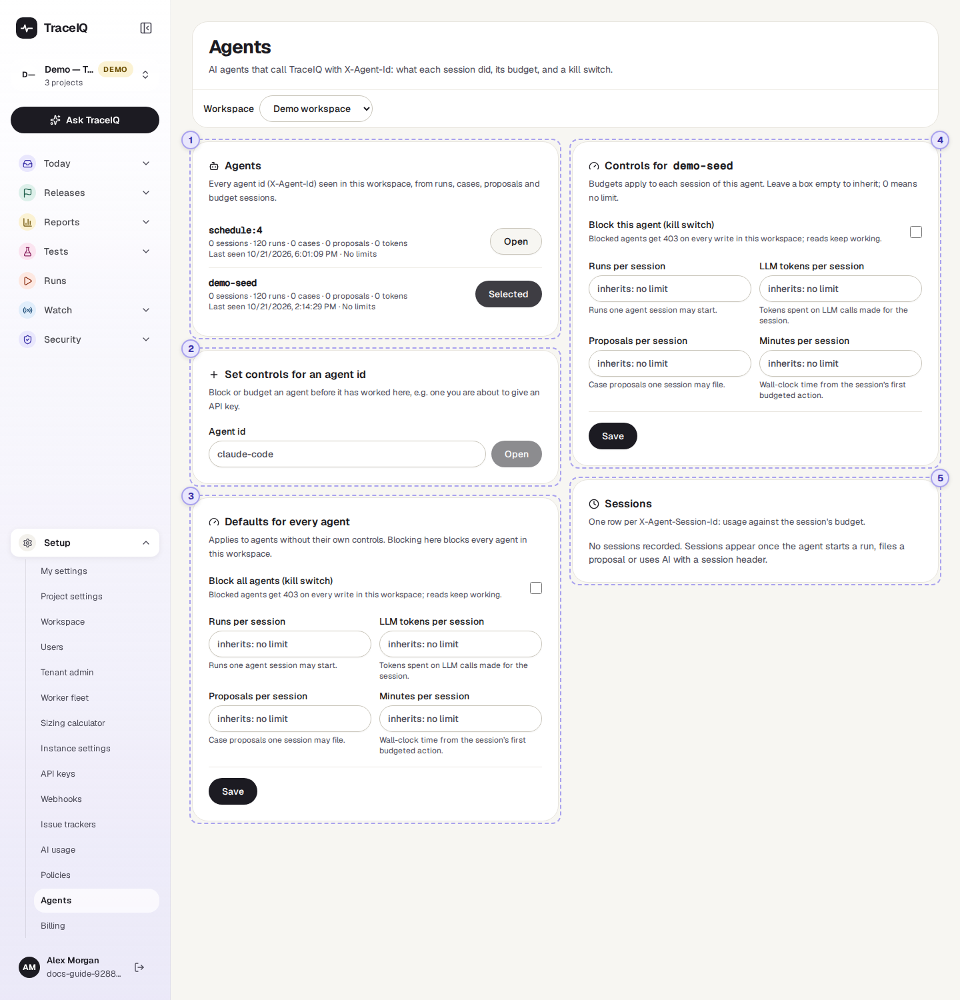
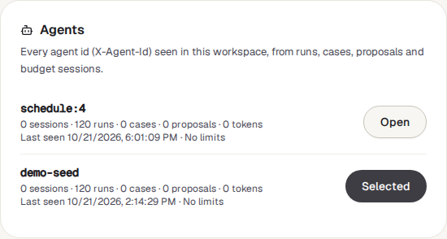
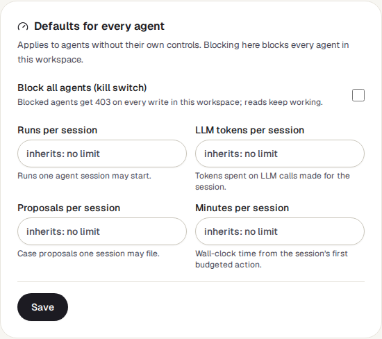
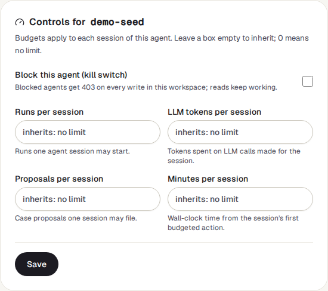
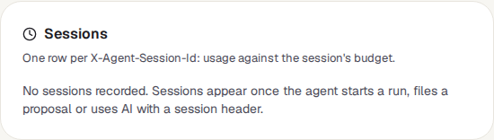

Agents
An agent is a program, often an AI coding assistant, that uses TraceIQ on someone's behalf: it starts runs, writes tests or suggests fixes. This page shows what each agent did in the workspace, lets you limit how much one piece of its work may do, and has a kill switch that stops it changing anything.
What it is for
Agents answer "What have the AI tools been doing here, and how do I keep them in bounds?" An agent can work fast and for a long time without anyone watching. A budget stops a confused agent from starting hundreds of runs; the kill switch stops it completely, at once.
Workspace admins
Give every agent sensible limits, and block one that misbehaves.
Developers
See exactly which runs, tests and suggestions their assistant produced in one task.
Security and audit
Follow what an automated tool changed, and when it was refused.
Where to find it: in the sidebar, open Setup → Agents.
- An agent names itself with every request it sends (technically, an
X-Agent-Idheader), for exampleclaude-code. That name is its agent id. - A session is one piece of work by that agent, such as "fix the
login test". The agent gives each one its own name (
X-Agent-Session-Id). Budgets are counted per session.
A tour of the screen
On the left: the agents, a box to set controls for a new agent, and the defaults for
all agents. On the right: the agent you open. In the screenshot demo-seed
has been opened. The numbers match the sections below.

If you belong to more than one workspace, a Workspace menu sits under the heading. The page opens on the workspace of the project selected in the sidebar.
Agents

Every agent id that has worked in this workspace, the most recently active first. An agent appears once it has started a run, created a test, filed a proposal, or worked in a budgeted session. For each one:
- Its name, with Blocked when the kill switch is on (its own, or the one for all agents) and 3 refused when its sessions were refused something.
- What it did: sessions, runs, tests ("cases") created, proposals filed, and AI tokens used in its sessions.
- Last seen, and its limits per session, or No limits.
- Open shows the agent on the right.
Any run that carries an agent name is counted. Runs started by a TraceIQ
schedule or monitor carry the name schedule: plus the schedule's
number, so they are listed too. In the demo workspace neither entry is an AI agent:
schedule:4 is the demo monitor's runs and demo-seed is the
program that generated the sample history.
Set controls for an agent id
To limit or block an agent before it has done anything here (for example one you are about to give an API key), type its exact agent id and press Open. Its controls appear on the right, ready to fill in. Nothing is saved until you press Save there.
Defaults for every agent

The same controls as for one agent (see ④), applied to every agent that has none of its own. Block all agents (kill switch) stops every agent in the workspace, including ones that have their own controls. An empty box here takes the server-wide default your administrator set; the grey text in the box says what that is ("inherits: no limit" when there is none).
Controls for one agent

- Block this agent (kill switch): tick it and save, and the agent is refused every change it tries in this workspace: no runs, tests, suites or proposals, and its AI calls are skipped. It can still read, so it can report what happened. When ticked, a Reason box appears; the agent is shown that text.
- Four limits per session:
| Limit | What it counts |
|---|---|
| Runs per session | Runs the session may start. |
| LLM tokens per session | AI text (tokens) used for the session's work, including AI calls made while its runs ran. |
| Proposals per session | Suggested test changes the session may file. |
| Minutes per session | Time since the session first did something that counts. After that, everything above is refused for it. |
Leave a box empty to inherit (the agent's own value, then the workspace default, then the server default, in that order). Type 0 for "no limit". Only whole numbers are accepted; anything else shows a message and Save stays greyed out. Save applies the controls; Remove controls (shown once an agent has saved controls) deletes them, so the agent inherits everything again.
Sessions and timeline

One row per session of the opened agent, newest first (up to 100): its name, Out of runs (or tokens, proposals) when a budget is spent, how much it used against each limit (for example Runs 12 / 50), how many times it was refused, and when it started and last did something. The demo's two entries never send a session name, so it says "No sessions recorded".
Show timeline opens the Session timeline below it: everything that session did, newest first (up to 500 items), each with a coloured label and, where there is one, a link:
| Label | What happened |
|---|---|
| Run | It started a run (with the run's result). |
| Case created / Suite created | It created a test or a suite. |
| Case edited | It changed a test during the session. |
| Proposal / Decision | It suggested a change, and what became of it (accepted, rejected or auto-applied). |
| LLM | An AI call made for it, with its tokens. |
| Refused | A rule said no, with the rule's name and the reason. |
Watch it in use
How to…
…stop an agent immediately
- Press Open next to the agent (or type its id under Set controls for an agent id).
- Tick Block this agent (kill switch), type a reason the agent will see, and press Save.
- Its next change is refused. If the agent might not name itself, also revoke its key in Setup → API keys.
…give every agent a sensible budget
- In Defaults for every agent, type limits, for example 50 runs and 120 minutes per session.
- Press Save. Every agent without its own controls now gets these.
- For an agent that needs more, open it and type a higher number (or 0 for no limit) in its own box.
…see what an agent did in one task
- Press Open next to the agent.
- Under Sessions, find the session (the newest is at the top) and press Show timeline.
- Click an item to open the run, test or proposal it points to.
Good to know
- Only workspace admins can see this page. It covers every project in the workspace. Others see "Workspace admins only".
- Only people can change controls. API keys are refused, so an agent can't unblock itself or raise its own budget. Every change is recorded in the Audit log.
- A limit is reached when the count equals it. With a limit of 50 runs, the 50th run starts and the 51st is refused. The agent gets a clear "budget exceeded" answer it can act on.
- Budgets only cover agents that name their session. Work sent without a session name is not budgeted. They are a safety net for well-behaved tools, not a lock. The kill switch covers any request that names the agent; for a tool that names nothing, revoke its API key.
- People are never blocked here. The controls apply to requests that carry an agent name; you working in the app are not affected.
- Refusals also appear on the Policies page, under Recent denials, where you can filter by agent id.
Related pages
Billing
The next page in this guide: the workspace's plan and how much of it is used.
Policies
Every rule that can refuse an action, and the record of refusals.
API keys
The keys agents use to reach TraceIQ, and how to revoke one.
Proposals
The changes agents suggest, waiting for a person to accept or reject them.